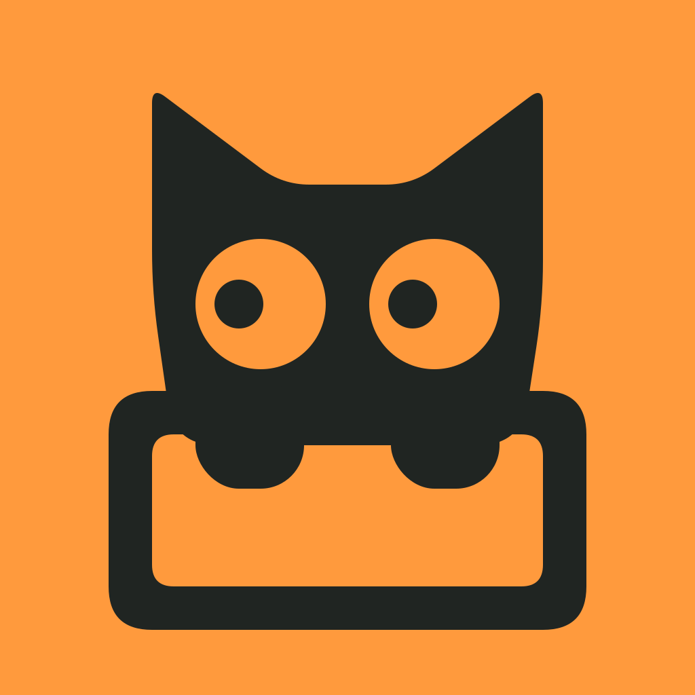
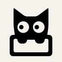
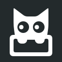
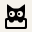

A优先推荐
探箱
猫 + 一个箱子
#FF9A3D · 1024px 原图 ↗给自己，找个小格子。
猫从一个箱子里探头，两只爪搭在箱沿。好奇的侧向视线与方正容器一起，讲清「住在格子里的工具伙伴」。
橘色让容器显得温暖、随手可亲。
主色 原生尺寸 / 1:1
单色 128px / 浅色与深色

浅色
深色浅色32px 
16px

深色32px 
16px
菜单栏 简化瞳孔与细节
优先推荐：猫与 cubby 的关系最直接。
1024px / 背景 / 透明模板 ＋
主色 / 外部背景语境
浅色
深色